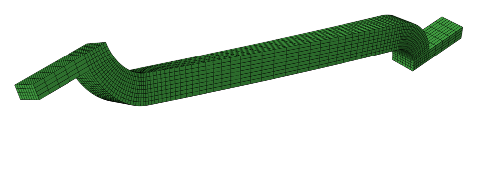
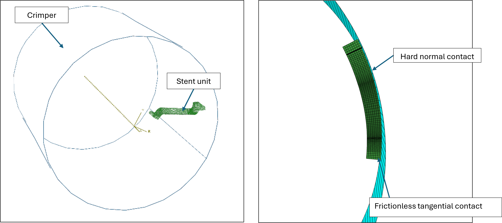
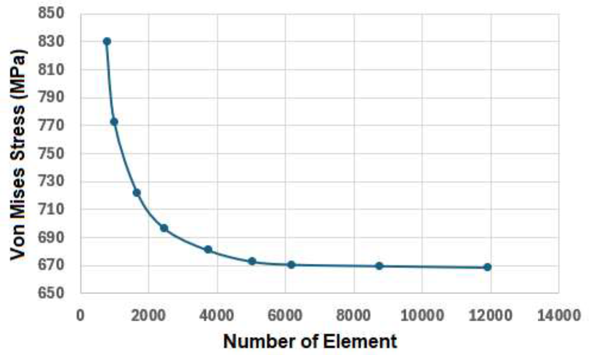
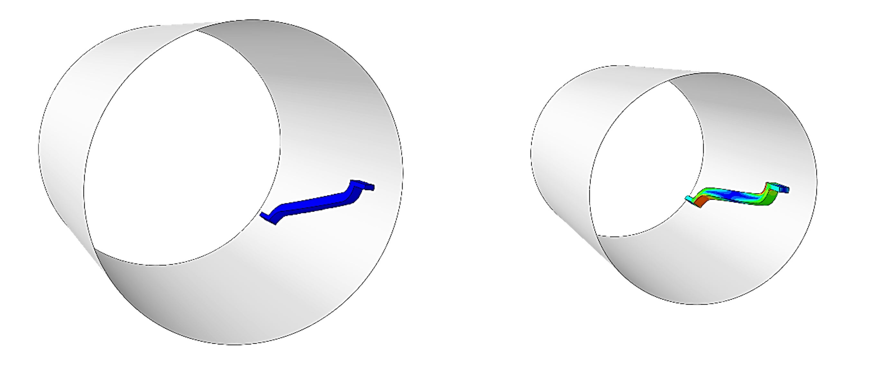
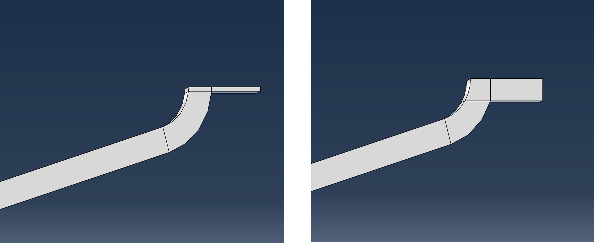
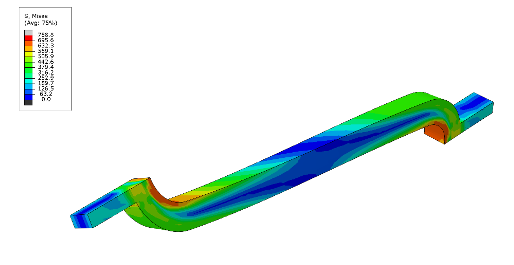
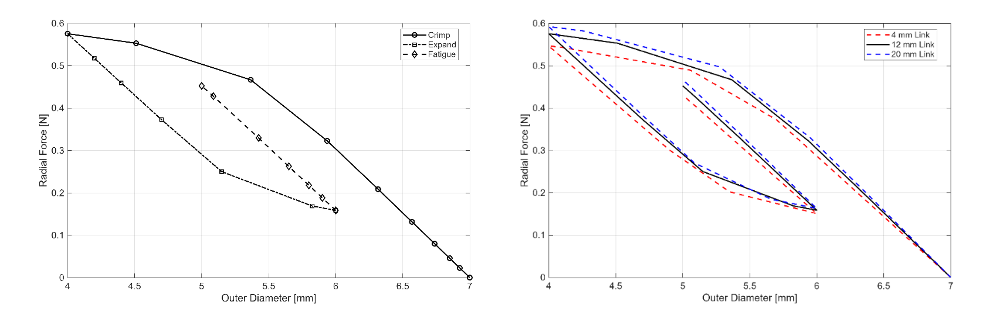
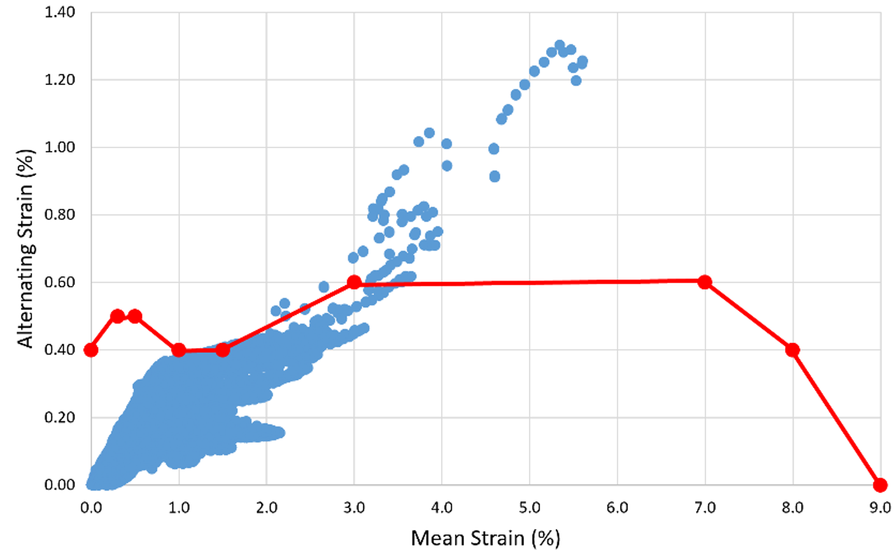

Finite Element Analysis of a Self-Expanding Nitinol Stent
Project Context and Objective
Nitinol stents are a form of cardiovascular stents that are designed to reopen blockages in arteries and restore blood flow to vital organs around the body. Nitinol is a nickel-titanium alloy whose unique properties make it an excellent candidate for use in self-expanding stents. Firstly, nitinol exhibits a super elasticity, allowing elastic strain up to 7%. This results in a ‘shape memory’ effect, where the stent will return to its original shape after deployment. The material also requires a larger force to load it than unloading. This results in a chronic outward force (COF) acting on the artery wall, keeping it open and preventing further blockages. The stent must be designed carefully such that the outward force is strong enough to keep the artery open, but not to damage the artery wall. However, given the constant cyclic loading experienced during blood flow cycles, the stent is subject to several forms of fatigue, often resulting in plasticity and eventually major fractures can occur [ref].
In this project, a non-linear finite element model of a self-expanding nitinol stent was developed using Abaqus CAE. The objective of the project was to capture the super elastic behaviour of nitinol, showing the chronic outward force exerted by the stent, evaluate the fatigue performance using a Goodman diagram and investigate the effect of s small design modification to the stent link on the fatigue performance.
Model Development
Geometry & Symmetry:
The full stent consists of 12 repeating units. One of these units was modelled and periodic boundary conditions were applied to enforce the cylindrical symmetry of the stent unit. A rigid exterior crimper was used to simulate the crimping of the stent during deployment and operation during blood pressure cycles. A hard normal contact and frictionless tangential contact were applied between the outer stent surface and inner crimp surface.

Reconstruction of the system time evolution by a neural network given the initial full representation

Reconstruction of the system time evolution by a neural network given the initial full representation
Mesh Strategy:
A structured hexahedral mesh was used with local refinements in the regions of high curvature. A mesh convergence study was performed on the maximum von Mises stress to ensure the results were mesh independent.

Reconstruction of the system time evolution by a neural network given the initial full representation
Loading and Analysis Steps:
To simulate the forces acting on the stent during deployment and operation, three displacement steps were applied to the outer crimper.

Reconstruction of the system time evolution by a neural network given the initial full representation
Design Modification
Five different link thicknesses (4mm, 8mm, 12mm, 15mm, 20mm) were tested to determine the effects on the COF and fatigue performance of the design.

Reconstruction of the system time evolution by a neural network given the initial full representation
Results
Stress Distribution:
For the stent, the peak von Mises stress of 695 MPa occurs at the curved region next to the link.

Reconstruction of the system time evolution by a neural network given the initial full representation
Chronic Outward Force (COF):
By plotting the radial force on the crimp during the various loading stages, a clear hysteresis is observed between the loading and unloading steps. This is consistent with the expected behaviour of nitinol and clearly displays chronic outward force from the larger force required to compress the stent than to expand it. The COF of the stent increases with the link thickness.

Reconstruction of the system time evolution by a neural network given the initial full representation
Fatigue Assessment:
From the stent strain at the start and end of a single fatigue cycle, the mean and alternating, the mean and alternating strain were evaluated and plotted on a Goodman diagram. As the thickness of the link increased, the maximum mean and alternating strain of the design also increased, increasing the fatigue susceptibility.

Reconstruction of the system time evolution by a neural network given the initial full representation
Reconstruction of the system time evolution by a neural network given the initial full representation